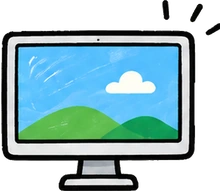
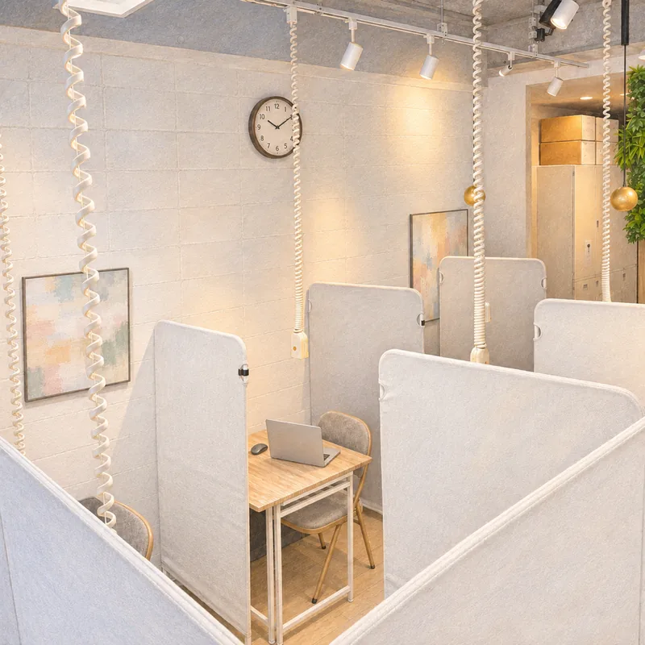
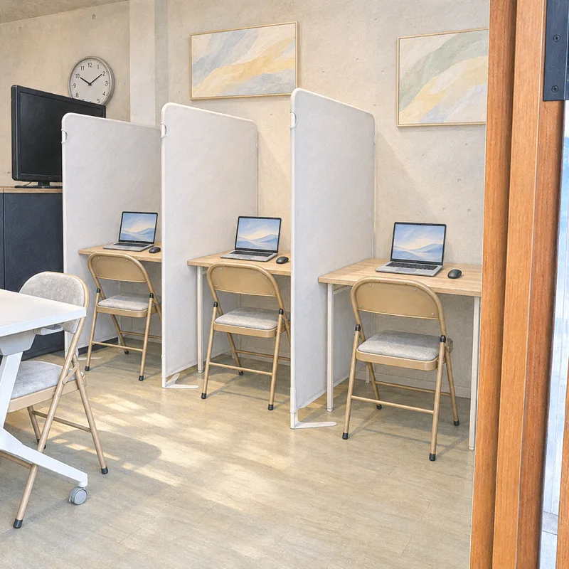

ご本人の希望を伺う
生活や作業で大切にしたいことを伺い、必要な支援を一緒に考えます。

就労継続支援B型 トレンドリサーチセンター
障がいや体調などに配慮しながら、作業に取り組む場所です。どの作業が合うか、どんな支援が必要かを相談できます。
精神・身体・知的障がいや難病等のある方が対象です。利用できるか分からない場合も、まずはご相談ください。
動画作成に関わる作業。
インターネット販売に関わる作業。
作業内容は見学時にご紹介します。
資料では、動画の作成やYouTubeの運営に関わる業務を紹介しています。どの工程に取り組むか、どんな支援が必要かを相談します。
インターネット販売に関わる業務や軽作業をご案内しています。現在の具体的な作業は見学時にご紹介します。


作業室は、実際の部屋をもとに描いたイラストです。作業風景は見学時にご覧いただけます。
昼休憩を挟み、午前と午後に作業に取り組みます。
短時間の利用や送迎をご希望の方は、相談時にお知らせください。
サービスの自己負担は受給者証などにより異なります。食事等を利用する場合は、別途費用がかかります。
無料のお弁当を提供する場合もあります。条件や提供日はお問い合わせください。
取り組んだ作業に応じて、工賃をお支払いします。金額の決め方や支払方法は、利用前にご説明します。
利用料と工賃は別のものです。ご自身の負担額や工賃について、見学の際にもご相談いただけます。
パソコンの経験や、作業で不安に感じることをお聞かせください。見学時に実際の作業をご案内し、必要な支援を相談します。
希望する日数・時間、体調などを相談時にお知らせください。利用できる条件を確認してご案内します。
希望により送迎の利用を相談できます。乗降場所や時間は安全性・交通状況等を踏まえて調整します。対応エリアや費用はお問い合わせください。
受給者証の有無を含めてご相談ください。サービス利用に必要な申請や手続きについてご案内します。
利用料はサービスを受ける際の費用、工賃は作業に応じて受け取るお金です。それぞれの条件を利用前にご説明します。
生活や作業で大切にしたいことを伺い、必要な支援を一緒に考えます。
虐待の防止と身体拘束の適正化に関する方針に沿って、ご本人の尊厳を大切にします。
ご本人・ご家族からのご意見や相談を受け付け、支援の改善につなげます。
希望する支援や、知りたいことをお聞かせください。
過ごす場所や支援の内容を、一緒に確認します。
費用や必要な手続きについて、利用前にご案内します。
ご本人はもちろん、ご家族・相談支援専門員の方もご相談ください。